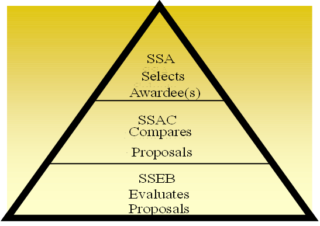

1.4 Source Selection Team Roles & Responsibilities
Source selection is a multi-disciplined team effort. The Source Selection Team (SST) should include representatives from appropriate functional areas such as contracting, small business, technical, logistics, cost/price, legal, and program management. User organizations should also be represented.
The success of any source selection is determined to a large degree by the personnel involved. Likewise, the Source Selection Authority (SSA), with assistance from the SCO, will ensure the appointment of people with the requisite skills, expertise, and experience to ensure the success of the source selection. This includes those members appointed to the Source Selection Advisory Council (SSAC).
The SCO is responsible for determining the capability of the organization to effectively resource the SST as set forth in the hierarchy of source selection expertise below (see Figure 1-1). In the event the SCO determines the required expertise is not obtainable, the HCA will be consulted. If the HCA concurs the resources are still unavailable, the DASA(P) will be notified and will assist in providing resources from other contracting activities, or assign the procurement to another contracting activity for execution.
|
Figure 1-1: Hierarchy of Source Selection Expertise
The size and composition of the SST will vary depending upon the requirements of each acquisition. For example, major hardware acquisitions frequently involve requirements organizations from across the Army (or from other services on joint-service programs). In such cases, and when forming the SST, SSEB Factor/Subfactor teams should include evaluator representation from each major requirements organization. These evaluators should be assigned to the evaluation criteria associated with their specific area of requirements interest. Inclusion of technical evaluators who are subject matter experts on the requirement(s) being evaluated is essential to a successful evaluation process and fair/accurate assessment of the proposals, and absolutely critical where joint-service and/or multiple functional requirements are involved.
Whether the team is large or small, it should be structured to ensure teamwork, unity of purpose, and appropriate open communication among the team members throughout the process. This will facilitate a comprehensive evaluation and selection of the best value proposal.
Key Components of the SST
For source selections with a total estimated value of $100M or more, the SST shall consist of the SSA, a SSAC, and an SSEB. Each of these SST entities has distinct and separate functions (See Figure 1-2).

Figure 1-2: SST Responsibilities
The SSEB is usually comprised of multiple groups of evaluators who are responsible for evaluating specific areas of the proposal against the RFP requirements. Additionally, legal counsel, small business advisors, cost/price, and technical experts may also serve as SST advisors. The precise structure of the SSEB is a matter within the SSA’s discretion.
The information below supplements the Roles and Responsibilities found in the DoD Source Selection Procedures (see paragraph 1.4).
The SSA.
-
Appointment. The AFARS 5115.303 provides the policy on SSA appointments.
-
All appointed SSAs are considered procurement officials and are subject to the associated statutory / regulatory rules.
-
Once appointed, the SSA cannot further delegate their SSA authorities.
-
Note: The identity of the SSA shall be considered procurement sensitive and shall not be disclosed to anyone who has not signed a non-disclosure agreement for that RFP / acquisition.
-
-
Ensure the Source Selection Plan (SSP) and evaluation criteria are consistent with the requirements of the solicitation and applicable regulations.
The Procuring Contracting Officer (PCO).
-
No Army text.
The SSAC.
-
The SSAC will consist of senior Government personnel, and may include representation from the cognizant contracting office and legal office.
-
For Acquisition Category I/II Source Selections involving requirements organizations from across the Army (or from other services on joint-service programs), the SSAC must include representation from all significant requirements organizations. The SSAC representatives must be at an organization / grade level commensurate with the other members of the SSAC, usually military 0-6/GS-15 or higher.
The SSEB.
-
The SSEB Chairperson.
-
Ensure the SSEB members understand the evaluation criteria and establish a uniform approach to the evaluation and rating effort. Seek to build consensus among the SSEB members.
-
Isolate policy issues and major questions requiring decision by the SSA.
-
Relieve and replace SSEB members from assignment only in the event of a demonstrated emergency or other appropriate cause.
-
Arrange for the SSEB members to work compensatory time, when necessary, authorized, and approved.
-
Arrange for the needed administrative staff at the evaluation work site.
-
-
The SSEB Members.
-
Prepare the evaluation notices (ENs).
-
Brief the SSAC/SSA (as requested), and respond to comments / instructions from the SSAC/SSA.
-
Legal Counsel.
-
No Army text.
Other Advisors.
-
No Army text.
Program Manager (PM) / Requiring Activity (RA).
-
No Army text.
Administrative Support.
-
Each acquisition will vary in terms of the administrative support requirements. Figure 1-3 contains a checklist of some important requirements common to many acquisitions.
|
Figure 1-3: Administrative Support Considerations